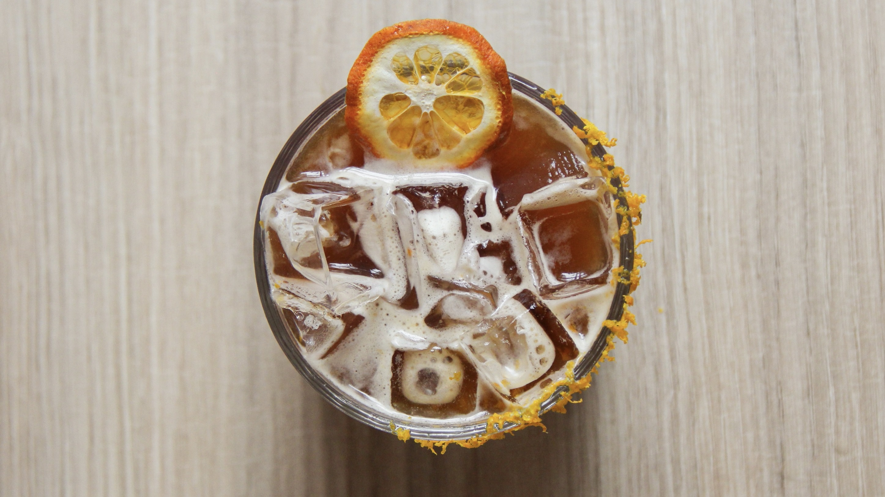
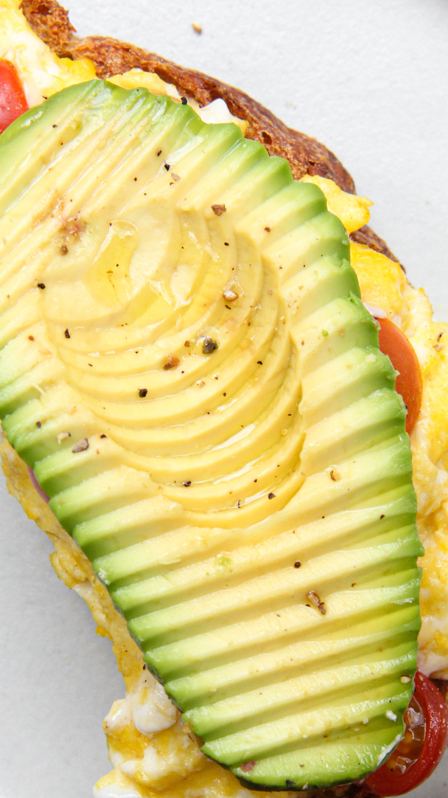
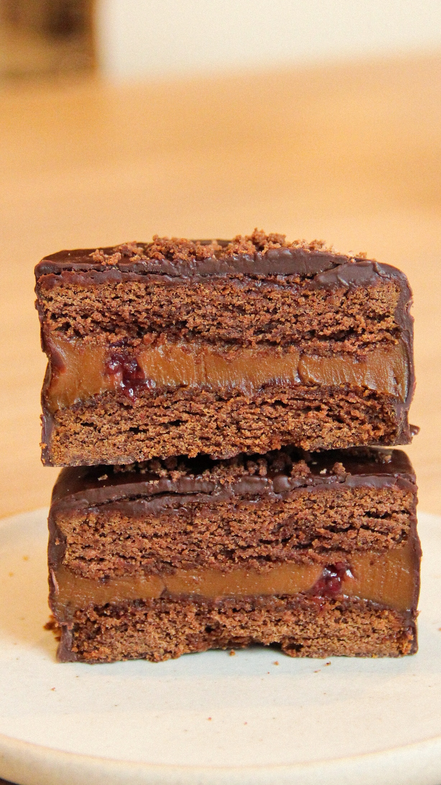

- Calientes
- Espresso simple / doble
- Americano
- Cortado
- Cappuccino
- Flat white
- Latte
- Filtrado
- Chimi - El barista elige

- Sin café
- Matcha latte frío - con leche de frutilla o almíbar herbal
- Té frío - con almíbar cítrico
- Limonada - fruta de estación
- Agua o agua con gas
- Té calentito (Tealosophy)
- Chai latte
- Especiales fríos
- Como un flan - Iced latte con naranja y caramelo
- Speedy Gonzales - Americano frío con reducción de mandarina y ajíes
- Espresso tonic - con reducción de maracuyá
- Affogato hecho en casa - Helado casero de vainilla, espresso simple y biscotti de almendras para más placer
- Colbrucito - Americano mediano con reducción de mandarinas y ajíes
- Otras bebidas
- Mocca buba - Cappuccino doble con chocolate y cabutia
- Gin tonic - Macerado con café y almíbar cítrico
- Vermut casero - Con soda o tónica
- Ice flat white
*Adicional leche de almendras*

Combos
- Brunch para uno
- 1 tostón a elección
- 1 café (Latte o cappuccino)
- 1 limonada chica a elección
- 1 cookie o porción de budín
- Brunch para dos
- 1 plato o sandwich a elección
- 1 tostón
- 2 vasos chicos de limonada
- 2 cafés (Latte o cappuccino)
- 1 porción de torta o 2 cookies
- Salados
- Tostón palta - Pan de masa madre, queso crema, palta, alioli y huevo pasado por agua
- Tostón palta vegano - Pan de masa madre, hummus de arvejas, palta, limón y eneldo
- Tostón ricota - Pan de masa madre, ricota casera, pesto y tomates confitados

- Sanguchitos
- Sanguchito veggie - Pan brioche, pesto, tomates confitados, berenjenas al escabeche y queso
- Sanguchito pastrón - Pan brioche, pastrón casero, queso, pepinos en pickle y mostaza de dijon
- Tostado de jamón y queso - Pan brioche, mostaza de dijon, bechamel, jamón y queso. Opción capresse
- Tuna bagel - Bagel casero relleno de atún, queso crema, huevo, palta, aceitunas y eneldo

- Platos
- Plato brunch - Panceta crocante, huevos revueltos, palta, tomate fresco y pan tostado
- Plato Ibérico - Jamón crudo, queso parmesano, tomate rallado y panes tostados con ajo
- Mbejú - Tortilla de chipa, palta, alioli, cebollas en pickle y huevo pasado por agua
- Otros
- Yogurt con granola - Yogurt natural con granola casera, miel y fruta de estación
- Tostadas con queso y dulce - Tostadas de pan de masa madre, mermelada de moras y queso crema. Opción vegana con mantequilla de maní
- Medialuna grillada con jamón y queso
Para pastelería, pasa a elegir por nuestro mostrador!